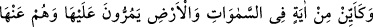
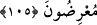
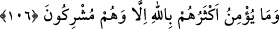

“O” yani Kur’ân-ı Kerim, kurtulmak istemelerini teşvik etmek maksadıyla bütün
“âlemler için ancak” Allah tarafından gelmiş bulunan “bir öğüttür” bir îkazdır.
Burada dâvet, irşad ve diğer hayır işlerinin insanlardan hiçbir menfaat istenmeksizin
yapılması gerektiğine işâret vardır. Çünkü bu tür fiiller, Allah için yapılır. Allah için
yapılan fiillere ise ne dünyevî ne de uhrevî hiçbir gayenin bulaşması câiz olmaz.
Mesnevî’de şöyle denilir:
Âşıkların sevinci ve gamı O’dur
Âşıkların el kirası ve hizmetlerinin ücreti O’dur
et-Te’vîlâtü’n-Necmiyye’de şöyle denilir: “Âyet, lâhûtiyetin/İlâhî âlemin -her ne
kadar kemâle ermeye dâvet etse de- nâsûtiyete/İnsanlık âlemine muhtaç olmadığına
işâret ediyor. Çünkü lâhûtiyet kendisi kâmildir, başkalarını da kemâle erdirir.”
105. Göklerde ve yerde nice âyetler vardır ki, onların yanından yüzlerini
çevirerek geçerler.
“Göklerde ve yerde nice âyetler vardır ki”; yani göklerde ve yerde bir yaratıcının
var ve bir olduğuna; ilim, kudret ve diğer sıfatları bulunduğuna delâlet eden; güneş, ay,
yıldızlar, yağmur, ağaç, yeryüzündeki hayvanlar, denizler, nehirler ve sair deliller
vardır.
“Onların yanından” tefekkür edip ibret almaksızın “yüzlerini çevirerek geçerler.”
Yani bu âyetlerin yanından geçtikleri halde onları müşâhede etmezler.
Bütün bu âyetleri ise Kur’an açıklar. Bu bakımdan Kur’an ahlâkıyla ahlâklanmadığı
halde Kur’an okuyanlara Allah şöyle nidâ eder: “Hem benden yüz çeviriyor, hem de
kelâmımı okuyorsun! Böyle okumak olmaz! Bana dönmeyeceksen uzaklaş !”
Müşrikler, bu âyeti duydukları zaman: “Biz tüm bu âyetleri yaratan Allah’a
inanıyoruz.” dediler. Bunun üzerine Allah Teâlâ şu âyeti inzâl buyurdu:
106. “Onların çoğu Allah’a ancak şirk koşarak îman ederler.”
“Onların çoğu Allah’a ancak şirk koşarak îman ederler.” Çünkü Allah’ın mâbûd
olma vasfına ortak olan birileri olduğuna inanmaktadırlar. Araplar telbiyelerinde şöyle